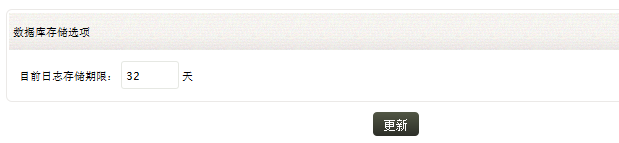

主页 » 管理设置 > 数据库存储设置
EventLog Analyzer会将日志数据保存到数据库一段时间，已进行处理，之后，这些数据将会被清理出数据库。如果将日志永久的保存在数据库，那么存储空间就会被无谓的消耗，且应用的性能也会被带慢。
怎样设置数据库的存储呢？
要设置数据库存储，可通过以下菜单实现：
要设置存储大小，请参阅以下步骤：

输入需要在数据库中保存日志数据的天数，默认值为32天。
点击更新按钮完成设置。